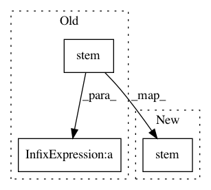

f3965fe659bf2158983ada87d6859c3c256908ad,nalaf/features/relations/path.py,PathFeatureGenerator,path_constituents,#PathFeatureGenerator#Any#Any#Any#Any#Any#,113
Before Change
def path_constituents(self, path, edge, words, feature_set, is_training_mode):
for token in path:
if self.stemmer.stem(token.word) in words:
feature_name_1 = self.gen_prefix_feat_name("prefix_47_word_in_path_" + self.stemmer.stem(token.word))
self.add_to_feature_set(feature_set, is_training_mode, edge, feature_name_1)
After Change
def path_constituents(self, path, edge, words, feature_set, is_training_mode):
for token in path:
if self.stemmer.stem(token.word) in words:
feature_name_1 = self.gen_prefix_feat_name("prefix_47_word_in_path", self.stemmer.stem(token.word))
self.add_to_feature_set(feature_set, is_training_mode, edge, feature_name_1)
In pattern: SUPERPATTERN
Frequency: 5
Non-data size: 3
Instances
Project Name: Rostlab/nalaf
Commit Name: f3965fe659bf2158983ada87d6859c3c256908ad
Time: 2016-10-28
Author: i@juanmi.rocks
File Name: nalaf/features/relations/path.py
Class Name: PathFeatureGenerator
Method Name: path_constituents
Project Name: Rostlab/nalaf
Commit Name: ed19e1248722d30cf603711d114e6de62f24fc40
Time: 2016-10-28
Author: i@juanmi.rocks
File Name: nalaf/features/relations/__init__.py
Class Name: TokenFeatureGenerator
Method Name: token_features
Project Name: Rostlab/nalaf
Commit Name: f3965fe659bf2158983ada87d6859c3c256908ad
Time: 2016-10-28
Author: i@juanmi.rocks
File Name: nalaf/features/relations/path.py
Class Name: PathFeatureGenerator
Method Name: path_dependency_features
Project Name: Rostlab/nalaf
Commit Name: efe43cd5b10ea243f41d375d7fb07f445c864dad
Time: 2016-10-27
Author: i@juanmi.rocks
File Name: nalaf/features/relations/sentence.py
Class Name: StemmedBagOfWordsFeatureGenerator
Method Name: generate
Project Name: Rostlab/nalaf
Commit Name: c5b2c76f2193e98109e4b61d6cb4ff64ddbfce8c
Time: 2016-10-28
Author: i@juanmi.rocks
File Name: nalaf/features/relations/context.py
Class Name: IntermediateTokensFeatureGenerator
Method Name: generate